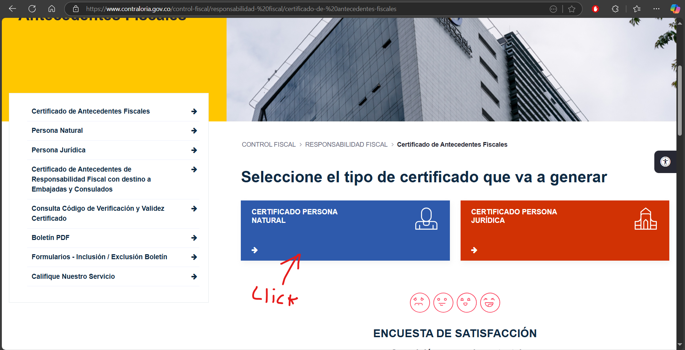
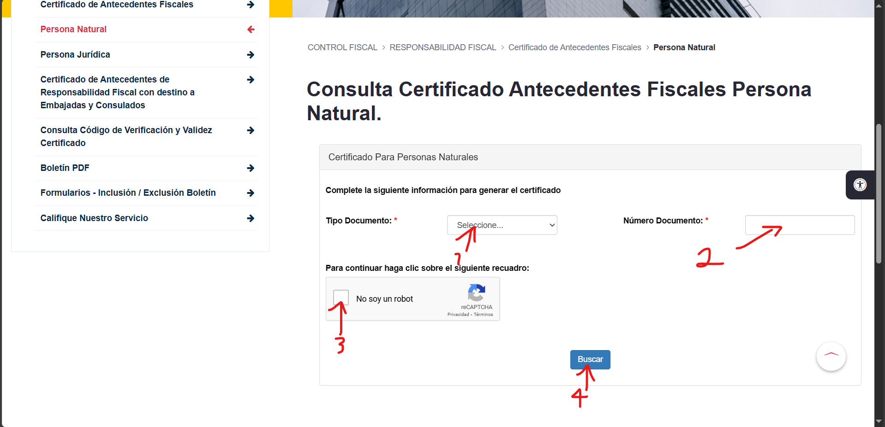
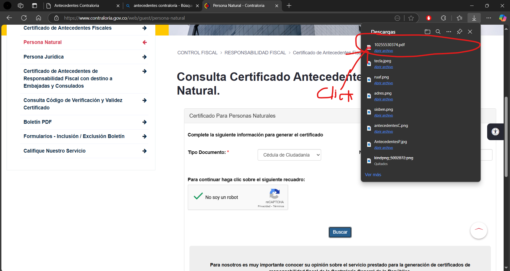
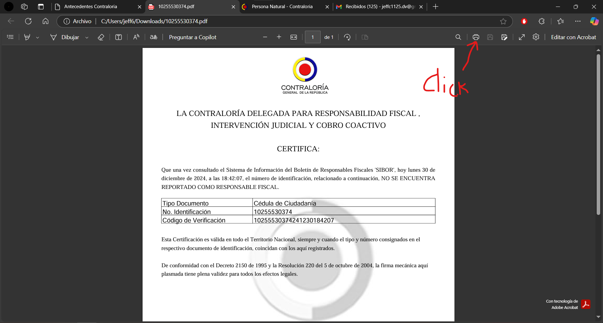
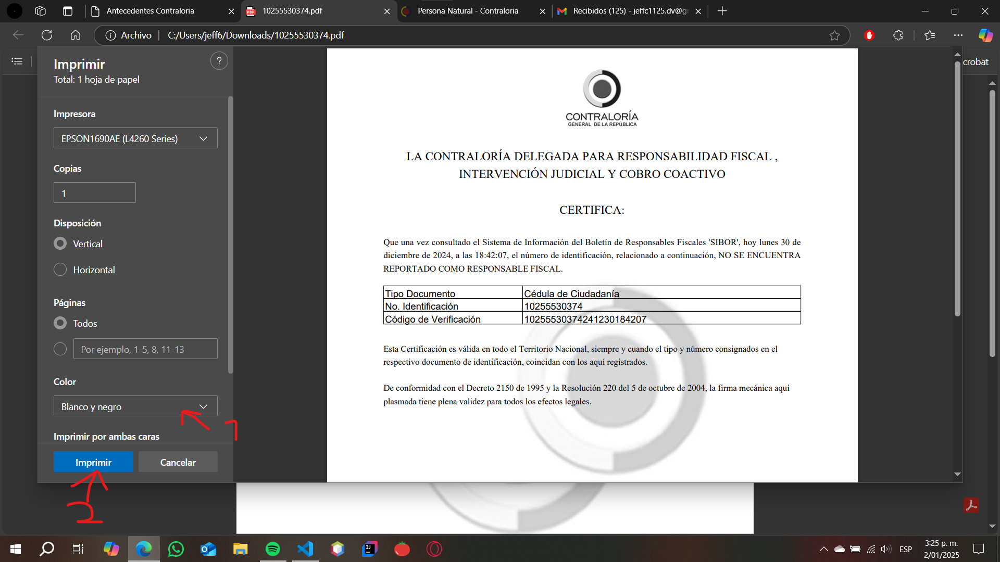

Instrucciones
paso 1.
paso 2.
Bajas la pagina y haz click en "Certificado Persona Natural"

paso 3.
Se selecciona el tipo de documento del cliente(se observa en numero 1)
Después se ingresa el número de documento (se observa en numero 2)
Después se da click en el cuadro que aparece en el número 3
por ultimo se da click en "Buscar" (se evidencia en numero 4)

Paso 4.
Después se abre el documento señalado, se le da doble click o en donde dice "abrir archivo"

Paso 5.
Después da click en imprimir

Paso 6.
Despues se elije entre blanco y negro o color dependiendo de la preferencia del cliente
por ultimo se da click en imprimir
